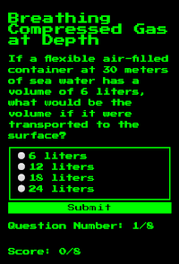
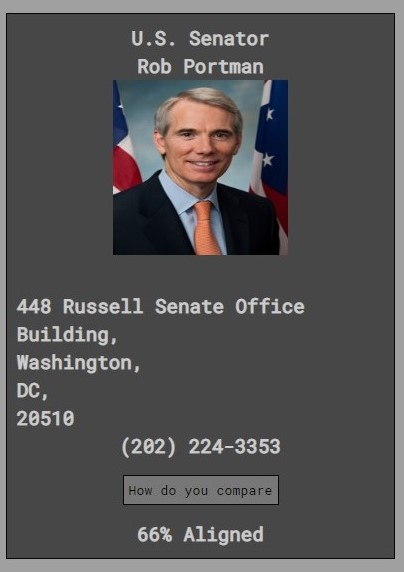

QUIZ APP
- html
- css
- javascript
This application quizzes the user on their knowledge of breathing compressed gases underwater.
VOTING MADE SIMPLE
- html
- css
- javascript
This application helps users to make more informed decisions with regard to voting for members of congress.